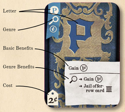
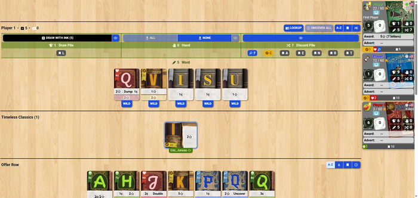

Hardback
Board Game Arena 官方规则文档
Overview
As an aspiring 19th-century novelist, you're paid by the word to complete romance, mystery, adventure, and horror novels, earning prestige in the process. Earn enough to complete your masterpiece and be recognized as the finest novelist of the age!
Build your deck of letters to make words. Use the words to buy new letters from different genres.
Game Components
Each player starts with a deck of 10 cards: 8 regular letters worth 1¢ each and 2 random "prestige" letters worth 1 point each. A colored bar in the player panel displays the current composition of each player's deck.
In the middle is the Offer Row, where you can purchase cards to add to your deck.
Each player can also gain Ink tokens and Remover tokens. One Ink costs 1¢. You can use Ink to draw an extra card from your deck when forming a word (1 Ink per card). But cards drawn with Ink must be used in your word and they cannot be made wild. If you cannot make a word using all your cards drawn with Ink, you must forfeit your turn. You can also trade 3 Ink tokens for 1¢.
Remover tokens let you remove the "Ink" status on a card, turning it into a normal card. Remover can only be gained by playing certain cards--it cannot be purchased.
Card Anatomy

Each card has the following attributes:
- Letter: Represents the letter used in the word you must spell.
- Genre: The icon and color of the card indicate its genre: Adventure, Romance, Mystery, or Horror.
- Basic Benefits: Items above the line in the description indicate the money, points, or abilities gained from playing the card.
- Genre Benefits: Items below the line in the description indicate special Genre benefits. These are only activated if you use multiple cards of the same Genre in the same word.
- Cost: How many ¢ needed to purchase the card.
Timeless Classics
Cards turned sideways are Timeless Classics. These cards are not discarded at the end of your turn, but remain in the play area. You gain the benefits from this card whether or not you include it in your word.
Any player can use a Timeless Classic, but does not gain the benefits (basic or genre) from it. If another player uses it, the Timeless Classic card is discarded.
Timeless Classics cannot be used as a wild card.
Other Mechanics
Trash: Remove a card from your discard pile. This card is removed from the game and does not go back into your deck when it runs out.
Flush Offer Row: If 4 or more cards in the offer row are either the same genre (color) or cost 6¢ or more, you may flush the offer row. All seven cards in the offer row are discarded and replaced with seven new cards. This option is not available during cooperative games.
Gameplay
Each turn has four phases: spell a word, discard unused cards, resolve card benefits, and purchase cards and Ink. Some optional actions are also available after a player's turn.
Phase 1: Spell a Word
When your turn begins, your cards move into your play area. Drag and drop the cards to rearrange them or remove them (you can also remove them by clicking "Remove" on the card's bottom). Removed cards can be re-added by clicking or dragging down to your word.
Click "WILD" on any card to use it as a letter of your choice. Making a card Wild cancels any benefits it would provide. If you change your mind, you can click "UNCOVER" to flip it back to its normal face. You can also use Ink to "press your luck" and draw additional cards from your deck. But any cards drawn with Ink must be used in your word (unless Remover is applied to them).
All cards in your hand and used to spell the word are discarded at the end of your turn. Cards are not saved from one round to the next.
If you can't spell a word, you may forfeit your turn.
Phase 2: Gain Card Benefits
Gain all the basic benefits of cards used in your word. If you played 2 or more cards belonging to the same genre (color), you also gain the Genre Benefits from those cards. Hover your mouse over the benefit section of the card to see more information.
Coins (¢) allow you to purchase new cards and ink. Points (★) increase your score.
| Ability Name | Genre | Description |
|---|---|---|
| Trash | Adventure | Trash the card with this benefit to gain money or points. |
| Recover | Horror | Gain 1 Ink or 1 Remover. |
| Jail | Mystery | Reserve or remove a card from the Offer Row. If you reserve it, you (and only you) may purchase it later. A player can only keep one card in reserve at a time. |
| Uncover | Mystery | Flip an adjacent wild card back to its face-up card. You receive its benefits. |
| Double | Romance | Double the coin and points earned from the basic benefits of an adjacent card. The card's numbers will highlight in yellow to indicate the change. This does not apply to genre benefits or abilities. A second "Double" only adds to the total, not multiplies. |
| Dump | Romance | Trash a card (remove it from your discard pile) to gain 1¢. |
| Preview | Romance | Draw three cards from your deck. Choose to return or discard each card drawn this way. |
Phase 3: Purchase New Cards and Ink
With the money earned from the cards in your hand, you may purchase cards in the offer row. Price is indicated in the upper left corner. Note that some cards also have a points (★) number below the price, which indicates points you gain from purchasing the card. (You do not pay points for a card.)
You can also buy Ink tokens for 1¢ each. Any ¢ not spent at the end of this phase is converted to Ink at the end of your turn. ¢ are not saved from one turn to the next.
You can exchange 3 Ink for 1¢ to help you buy more letters. (Board Game Arena only presents this option if you could purchase something with this increase.)
If the Offer Row does not change at the end of your turn, the oldest card in the Offer Row (indicated by a clock) is trashed.
Game End
When a player reaches 60 points, the round completes so all players have the same number of turns. The player with the most points wins. In case of a tie, the player with the most remaining Ink wins the game.
Game Area

Upper Left: Ink and Remover are displayed here. Spend Ink by clicking "DRAW WITH INK". Below this are statistics about your draw pile, including the potential letters that could be drawn.
Middle: Controls the cards in your hand, meaning the ones in your play area and the ones not being used for the word. You can remove all cards from the play area by clicking "ALL" and put them back with "NONE".
Upper Right: Your discard pile is displayed, along with the letters in that pile. Above this are buttons for "LOOKUP" (look up a word in the dictionary), "UNCOVER ALL" (flip all the cards in your hand face-up), and ways to arrange your cards (alphabetical, genre, or shuffle).
The Offer Row has similar options to be arranged alphabetically, by price, by genre, or by time in the Offer Row (youngest to oldest).
Variants
Literary Awards
Literary Awards are given to players who spell longer words (7-12 letters) and are worth bonus points at the end of the game. There are six awards--one for each potential word length (7,8,9,10,11,12). When a player spells a word of that length, he/she receives the Literary Award for that length and all awards with a lower length are removed from the game (including those belonging to other players). This means only one player will have a Literary Award at the end of the game (the player who spelled the longest word).
For example, Alice spells a 7-letter word. She gains the 7-letter Literary Award (worth 5 points). Bob spells a 10-letter word. He gains the 10-letter Literary Award. All cards of lower value, including Alice's, are removed from the game.
The points are not added to your score until the end of the game.
Adverts
Players can purchase points through adverts during the Purchase phase. Each player has an advert tracker and uses it to buy points. Each advert can only be purchased once and must be purchased in the order listed. Multiple adverts can be bought during your turn, as long as they are in order.
For example, Alice purchases the Advert for 6¢. 3 points are added to her score. The 6¢ slot is marked on her Advert tracker card, making the next Advert she can purchase cost 9¢.
These points are immediately added to your score.
Cooperative Anthology
Players work together to defeat their archrival, Penny Dreadful.
The players collectively use one score tracker, and Penny Dreadful uses the other. Unlike the competitive game, laps around the score tracker are marked.
Each player plays as normal, but after each player's turn, Penny Dreadful purchases the oldest (rightmost) card and earns points equal to its cost.
Players are not able to flush the Offer Row. Players cannot win multiple Literary Awards (only one player can have an award).
Any player can use Timeless Classic cards without being discarded. However, if a new card of the same genre is added to the Offer Row during your turn or Penny Dreadful's next turn, the Timeless Classic card is discarded.
The game ends when one side (either the players or Penny Dreadful) earns the goal total, which is 60 points per human player (i.e., 180 points for a three-player game). If the players beat Penny Dreadful, their collected writings become instant classics. However, if Penny Dreadful wins, the players suffer the shame of seeing Penny's name on the best-seller list.
This mode can also be played solo.
Penny Dreadful's Signature Genre
You can choose a signature genre to give Penny Dreadful's turn an additional effect.
- Adventure: While an adventure card is in the Offer Row, Penny receives 1 point for each card purchased by any player.
- Horror: While a horror card is in the Offer Row, Penny receives 1 point for each Ink used by any player.
- Mystery: When Penny removes a Mystery card from the Offer Row, she also removes the lowest-priced card in the Offer Row. (Points are not earned from this second card).
- Romance: When Penny removes a Romance card from the Offer Row, she gains double the Prestige points for that card.